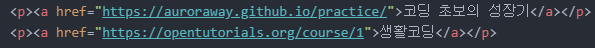
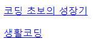
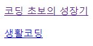
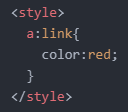
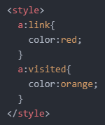
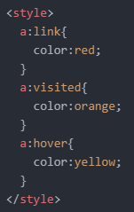
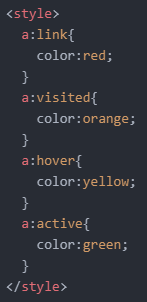
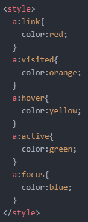
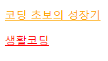
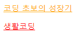

- 선택자에 대해 더 알아보기 2
오늘도 어제에 이어서 선택자에 대해 좀 더 알아보겠습니다.
우선, '가상(Pseudo) 클래스 선택자'에 대해서 알아보겠습니다.
가상 클래스 선택자는 클래스 선택자와 같은 기능을 할 수 있습니다.
저는 여러 클래스 선택자들 중에서 'link', 'visited', 'hover', 'active', 'focus' 선택자만 알아보려고 합니다.
코드 작성은 쉽습니다.
CSS를 적용시키고자 하는 태그를 쓰고 그 뒤에 ':link', ':visited'와 같이 써주면 가상 클래스 선택자를 사용할 수 있게 됩니다.
그럼 예를 한 번 들어보겠습니다.
우선 다음과 같은 코드를 작성했습니다.

그럼 다음과 같은 결과가 화면에 출력됩니다.

설명을 위해 가장 위 링크를 클릭하여 방문 상태로 남겨주세요.
아래와 같이 말이죠.

가장 먼저, 아래와 같이 ':link' 가상 클래스 선택자를 적용시켜보겠습니다.

그럼 방문한 적이 없는 '생활코딩' 링크가 빨간색으로 바뀌게 됩니다.
다음으로 ':visited' 가상 클래스 선택자를 적용시켜보겠습니다.

선택자 이름에서 알 수 있듯이, 방문한 적 있는 링크의 색이 주황색으로 바뀌었음을 알 수 있습니다.
그런데, ':visited' 가상 클래스 선택자는 여러 보안상의 이유로 다음과 같은 속성만 변경 가능합니다.
'color', 'background-color', 'border-color', 'outline-color', 'The color parts of the fill and stroke properties'
다음으로 ':hover' 가상 클래스 선택자를 적용시켜보겠습니다.

링크에 마우스 커서를 가져다 대면 링크의 색상이 노란색으로 바뀌는 것을 알 수 있습니다.
다음으로 ':active' 가상 클래스 선택자를 적용시켜보겠습니다.

링크를 클릭하거나 클릭 상태를 유지하고 있을 때 링크 색상이 초록색으로 바뀌는 것을 알 수 있습니다.
마지막으로 ':focus' 가상 클래스 선택자를 적용시켜보겠습니다.

'focus' 가상 클래스 선택자는 겉으로는 기능을 알 수 없습니다.
그런데 해당 선택자가 적용된 링크로 'tab' 키를 눌러서 이동하면 다음과 같이 링크 색상이 파란색으로 바뀌는 것을 알 수 있습니다.
 <좌: ':focus' 적용 X / 우: ':focus' 적용 O>
링크 색상을 지정한 색상으로 바꿈으로써 해당 링크에 포커싱을 했다는 의미입니다.
이렇게 가상 클래스 선택자에 대한 설명을 마치겠습니다.
마지막으로 선택자 관련 게임 하나를 소개해드리겠습니다.
http://flukeout.github.io/
위 링크를 누르시면 게임 하나가 나오는데 이에 대한 설명은 아래 영상으로 대체하겠습니다.
아래 영상들은 위 영상과 이어지는 영상이지만, 위 게임을 스스로 클리어한 후 아래 영상들을 보시는 것을 추천드립니다.
그럼 선택자에 대한 설명은 여기서 마치겠습니다.
그럼 내일도 화이팅!